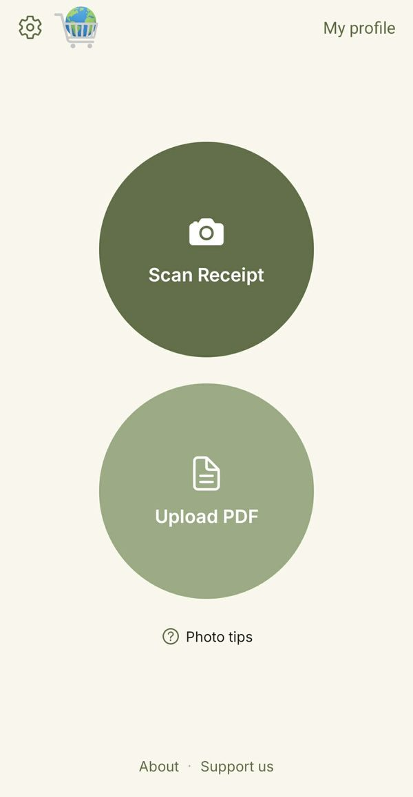
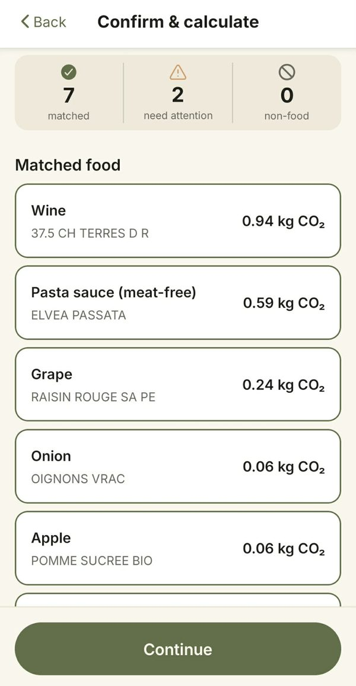
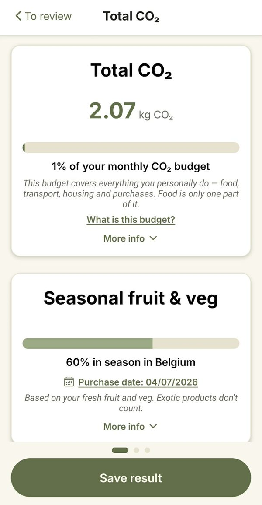

See the carbon footprint of your groceries
Take a photo of your supermarket receipt. ClimateCart estimates the CO₂ of every product and shows what your shopping adds up to.
Android app · English, Nederlands, Français
How it works
-

1. Scan your receipt
Photograph a paper receipt (up to 3 photos for a long one) or upload a PDF receipt.
-

2. Check the matches
ClimateCart links each line on your receipt to a food category. You see what was matched and fix anything that needs attention.
-

3. See your footprint
Get the total in kg CO₂, per product and as a share of your monthly carbon budget. See how much of your fresh fruit and veg is in season in Belgium, and how a more plant-based basket would compare.
Create an account to save your receipts and follow your footprint over time.
Why we built it
Who really knows what 1 kg or a tonne of CO₂ looks like? ClimateCart puts a real number in front of you every time you shop, so these figures start to mean something. Scanning receipts is the means, not the end.
Rules, not AI
No AI is used to match your products. ClimateCart uses a matching algorithm linked to a large product database that we keep improving, so results keep getting better. The carbon values come from Agribalyse, the reference food database of the French environment agency ADEME. Without an AI model, it takes far less computing power, and the same receipt always gives the same result.
Honest estimates
We don't have information from individual producers, so each result is an estimate: a good indication of what a typical value for that product could be. It gives you a clear picture of the overall impact of your diet choices. It is not meant for comparing brands that sell similar products.
Your data
Your receipt photos and PDFs are not stored: they are read once to find your products, then deleted. Photos are read by Google's text-recognition service; PDFs are handled entirely by ClimateCart's own server, without any external service. No tracking cookies, no advertising identifiers, no location data. Results are only saved if you sign in and choose to save them, and they stay in the EU.